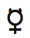
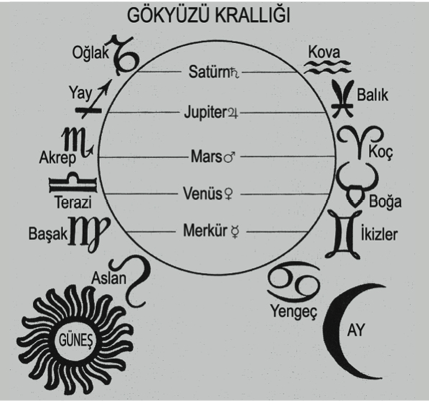
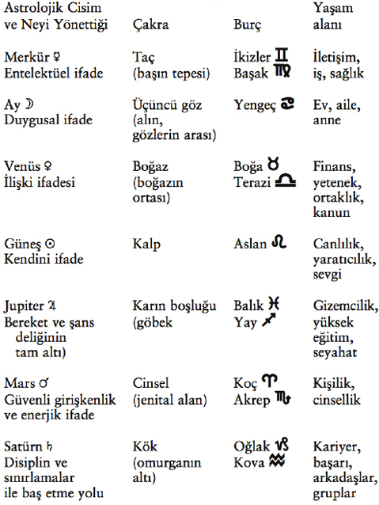
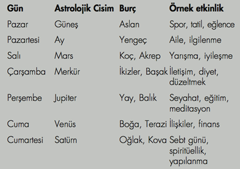

10. Bölüm: Kişisel Gezegenlerin Önemi
Güneş ve ay ile yaptığınız gibi gezegenleri de haritanızda belirleyin. Her birine atanan burca ve eve dikkat edin. Sonra gezegenin burçtaki ve evdeki açıklamalarını okuyun. Bu bilgi her gezegenin enerjisini, ruhunuzun haritasında nasıl ifade ettiği konusuna açıklık getirecektir.
İhtişamınız: Tanrıların Elçisi Merkür
İkizler ve Başak burçlarını yöneten Merkür, zekânızı simgeler. Kaderimize (güneş burcu) yaptığımız yolculuk (yükselen burç) sırasında ay burcu duygusal tepkilerimizi gösterirken Merkür, zekâmızı ifade ediş tarzımızı gösterir. Yol sırasında diğer yolcularla konuşur musunuz, eğer öyleyse bu ilişkileri nasıl şekillendirirsiniz? Yol aldıkça bilgi özümser misiniz? Ne tarz bilgi sizi heyecanlandırır ve çeker? Buluşlarınızı nasıl ve ne zaman paylaşırsınız? Merkür, bilgiyi en çok ilettiğiniz ve zekânızı paylaştığınız yaşam alanını belirler. Aynı zamanda dolandırıcı, hırsız ve yalancılarla karşılaşabileceğiniz alanı vurgular.
Örnek haritada (Şekil 2) Merkür  yedinci evde, 24 derece, 58 dakika Akrep burcunda gözükmektedir. Ketum Akrep burcunda Merkür, kişinin düşüncelerini açıklamaktansa dinlemeyi yeğlediğini gösterir. Bu kişi özel detektif veya casus olabilir mi? Yedinci evde Merkür, zekâ ve iletişimin kişinin ilişkilerinde büyük bir etkisi olduğuna işaret eder. Bu, kişinin ketum eşleri/ortakları veya derin ve meydan okuyucu düşünürleri yeğlediğini gösterebilir.
Kabalistik Yaşam Ağacında Merkür, hile/oyun ve büyünün turuncu küresi ihtişam ile ilişkilendirilir. Merkür/ihtişam evi, eş-zamanlılıklarla (senkronisite) gelen mesajları özümseyebildiğiniz yaşam alanını belirler. Eğer bu kariyer evi ise evren sizinle, kariyerinizi ilgilendiren eş-zamanlılıklar yolu ile iletişim kurar. Eğer Merkür dördüncü evde ise Tanrı sizinle evinizi veya ailenizi ilgilendiren eş-zamanlılıklar yolu ile konuşur.
Merkür zekânızı ve iletişim kurma yeteneğinizi simgeler. Yaşam Ağacının ihtişam küresinin elçisidir. Merkürün yer aldığı ev, konuşma ve dinlemeyi, bilgi almayı ve vermeyi dengeleyebildiğiniz yaşam alanını vurgular.
Merkür Koç burcunda veya Merkür Birinci Evde: Hızlı çalışan bir zihne sahip, fevri ve son derece sezgisel bir insan olarak zekânızla tartışmacı ve saldırgan olabilirsiniz. Sıklıkla ani içgörü ve bilgi akışı gelebilir. Entelektüel bir lider veya becerikli ve acımasız bir tüccar olabilirsiniz. ihtişamınız, kendiniz hakkında konuşmaktan ve yazmaktan kaynaklanıyor. iletmek istediğiniz mesajın kendisi siz olabilirsiniz.
Merkür Boğa burcunda veya Merkür Üçüncü Evde: Pratik ve pragmatik bir düşünürsünüz. Zekânız, sanat ve parasal işlemlerde kendini gösteriyor. Güçlü bir şekilde yoğunlaşma yetiniz var. Yazma, ticaret ve müzakereler yolu ile para kazanabilirsiniz. ihtişamınız yeteneklerinizde yatıyor. Zekânız, varlık ve bereket için bir araç olabilir.
Merkür İkizler burcunda veya Merkür Üçüncü Evde: Çok zeki ve konuşkansınız; yazma ve konuşma alanında müthiş bir beceriniz var. Benzeşmeyen insanları birleştiren bir elçisiniz. Nesnel, mantıklı ve akıllı bir düşünürsünüz. Kardeşleriniz ve komşularınızla ilişki oluşturmaya çalışın. ihtişamınız, yazmaktan ve iletişimden geliyor. Bir oyunbazsınız. Şakanın size geri dönmeyeceğinden emin olun.
Merkür Yengeç burcunda veya Merkür Dördüncü Evde: Entellektüelliğiniz duygularınıza bağlı. Hissettiklerinizi düşünüyor ve düşündüklerinizi hissediyorsunuz. iyi bir hafızanız ve aile ile hoş bir iletişiminiz var. Evde, gelişmenize yardım edecek bir ofis veya büyük bir kütüphane oluşturun. Evinizden ve ailenizden kaynaklanan ihtişamınız, arkadaşlığı ve entelektüel uyarılmayı evde bulmanız için sizi teşvik ediyor. Tanrı ile, aile bireyleri yolu ile iletişim kurabilirsiniz.
Merkür Aslan burcunda veya Merkür Beşinci Evde: Çarpıcı bir zekâ tarzı sergiliyorsunuz; konuşmaktan çok kükrüyorsunuz. Diğer bir deyişle, entelektüel bir züppe olabilirsiniz. Yazmak ve konuşmak daha çok bir performans veya ilgi merkezinde olmak ile ilgili. ihtişamınızın kaynağı, çocuklar ve oyun seven insanlar. Bir çocuk gibi konuşuyor ve bazen onun gibi düşünüyorsunuz. Tanrı ile, çocuklar veya içteki çocuk yolu ile iletişim kurabilirsiniz.
Merkür Başak burcunda veya Merkür Altıncı Evde: Son derece mantıklı ve çözümlemeci bir insan olarak küçük ayrıntılara dikkat ediyorsunuz. iyi bir düzenleyicisiniz, verimli ve etkili bir düşünme tarzınız var. Doğal bir elçisiniz. Sinir sisteminizi etkileyebilecek maddelerden temizlenmelisiniz; sağlık konularınız sıklıkla düşünme veya kendinizi ifade etme yolunuzdan kaynaklanıyor. ihtişamınız, işten ve hizmetten geliyor. Tanrı ile iş yerinde ve başkalarına hizmet ettiğiniz zaman iletişime geçiyorsunuz.
Merkür Terazi burcunda veya Merkür Yedinci Evde: Entelektüel ifadeniz ilişkiler ve ortaklıklarla ilgili. Düşünceleriniz için denek taşı olabilecek insanlarla daha rahat çalışıyorsunuz. Güçlü diplomatik yetenekleriniz var ve sanatçı yönünüzü, iletişim ve yazı ile ifade ediyorsunuz. Yaşamınızın ihtişamı, ortağınız/eşiniz. Entelektüel eşitiniz olabilecek birisine ihtiyacınız var.
Merkür Akrep burcunda veya Merkür Sekizinci Evde: Derin ve yoğun bir entelektüel ifade tarzınız var. Son derece etkileyici bir zihne sahipsiniz ve bilinmeyen sizi büyülüyor. Dolayısıyla, araştırmacısınız ve saklı bilgiyi açığa çıkarabiliyorsunuz. Cinselliğiniz iletişim ile ilişkili ve samimi yakınlığı iletebilmeye son derece ihtiyacınız var. Başarılı bir temsilci olabilirsiniz- emlak, sigorta, yetenek. ihtişamınız, samimi yakınlıktan kaynaklanıyor. Tanrı ile iletişime geçebilmek için yaşamınızda bu yakınlığı yaratmalısınız.
Merkür Yay burcunda veya Merkür Dokuzuncu Evde: İyimser ve idealist bir yaşam bakış açınız var. Yabancı bilgi kaynakları, değişik kültürler ve felsefeler ile ilgilenmelisiniz. Her zaman daha çok bilgi gerektiren kavramsal bir zihne sahipsiniz. Yabancı dil öğrenmek yeteneklerinizi geliştirecek. Yabancı kültürlerle temas ettiğinizde ihtişamınız ortaya çıkıyor. içe doğru veya dışarıya, değişik ülkelere seyahat ettiğinizde Tanrı ile iletişime geçebilirsiniz.
Merkür Oğlak burcunda veya Merkür Onuncu Evde: Disiplinli, yapılanmış ve stratejik bir zekâya sahipsiniz. Erken çocuklukta iletişim ile bir miktar sorununuz olmuş ama bu, kırkından sonra daha iyiye gidebilir. Yazma yeteneklerinizi, yaşam işinize dahil edin. ihtişamınız işinizden çıkıyor. Dünyevi arayışlarda bulunarak Tanrı ile iletişime geçebilir ve zekânızı başkalarına yansıtabilirsiniz.
Merkür Kova burcunda veya Merkür On birinci Evde: Son derece zeki, bilimsel ve geleceğe dönüksünüz. Genelde kutunun dışında düşünüyorsunuz. Arkadaşlar, gruplar ve gelişigüzel insanlarla yararlı iletişime geçmekten hoşlanıyorsunuz. Tanrı sizinle, arkadaşlarınız ve toplum yolu ile iletişime geçiyor. insanlık için bir mesajınız var- bunu seslendirin.
Merkür Balık burcunda veya Merkür On ikinci Evde: Şiirsel ve hayal gücü kuvvetli bir zihniniz var ve yüksek psişik (medyum) yeteneklere ve gözlemlere sahipsiniz. Rüyalar ve gündüz kurulan hayaller, size birçok bilgi aktarıyor. Bir olasılıkla geçmiş yaşamlarınızda bir yazar veya elçi idiniz. Tanrı sizinle sürekli iletişim halinde. Ama Tanrının meleklerini duymak için acı çekmeniz gerektiğini düşünmeyin.
Sonsuzluğunuz: Duyusal Doğa Venüs
Venüsün enerjisi, zevki, finansı, sanatı, kanunu ve önemli ilişkilerinizi simgeler. Kabalada Sonsuzluk küresi ile ilişkilidir. Venüs, ilginizi çeken insanı belirtir. Aynı zamanda, sosyal ve sanatsal ifade tarzınızı betimler.

Merkür zekânızı ve iletişim kurma yeteneğinizi simgeler. Yaşam Ağacının ihtişam küresinin elçisidir. Merkürün yer aldığı ev, konuşmayı ve dinlemeyi, bilgi almayı ve vermeyi dengeleyebildiğiniz yaşam alanını vurgular.

Kaderinize yaptığınız yolculukta Venüs, diğer yolcularla oluşturduğunuz yakın ilişkileri, karşılaştığınız manzaraya, kokulara, müziğe ve yiyeceklere olan tepkilerinizi simgeler. En üstün yaratıcı olan Tanrı, bizi kendi imgesinde yarattı, dolayısıyla, bizler de yaratıcıyız. Genlerimizde, DNA’mıza kazılmış olarak sanatsal bir özlem taşımaktayız. Dualarımızı tamamlarken kullandığımız amen sözcüğü, ibranicede “inanç” ve “sanat” anlamına gelmektedir. O zaman, sanatçı olmak inanmak demek. Ve inanç sahibi iseniz sanatçısınız demektir. Sanatçılar sadece kendileri için değil, kendi toplumlarındaki insanları ileri götürmek için yaratırlar. Ve haritanızda Venüs, toplumsal durumlara ve ilişkilere nasıl tepki verdiğinizi gösterir. Aynı zamanda, finans ve sanata bakış açınız hakkında fikir verir.
Boğa ve Terazi burçlarını yöneten Venüs, kadınsı yönünüz-dür. Örnek haritada (Şekil 2) Venüs 2 yedinci evde, 7 derece Yay burcunda yer almaktadır. Bunun anlamı, harita sahibi kişinin sanatsal ifadesinin (Venüs) yabancı ülkelerle (Yay burcu) ilişkili olabileceğidir. Aynı zamanda, yabancı bir kişi veya filozof (Yay burcu) ile evlilik (yedinci ev) söz konusu olabilir.
Venüs zevki, finansı ve kişisel ilişkilerdeki eğilimlerinizi simgeler. Aynı zamanda, Kabalistik Yaşam Ağacında Sonsuzluk küresinin, zevk, doğa ve sanat küresinin elçisidir. Venüsün bulunduğu ev, büyüme ve gelişme getirecek belirli eylem ve davranışları yinelemenizi isteyen yaşam alanınızı vurgular. Bu ev, Tanrı ile ilişkiniz hakkında size bilgi verecek yaşam alanınızı da içerir.
Venüs Koç burcunda veya Venüs Birinci Evde: ilişkilerinizde ve sosyal durumlarda saldırgan, finansta ve sanatsal ifadenizde fevrisiniz. Güçlü ve maskülen eşlere ilgi duyuyorsunuz; ilişkilerde ödün vermek veya izlemek yerine genelde liderliği yeğliyorsunuz. Kendinize olan ilişkiniz, Tanrı ile olan ilişkinizin iyi bir göstergesidir. Zevk ve duyusallık arketipi olan Sonsuzluğunuz, kendi kişiliğinizden geliyor. Siz kendi yolunuzu aydınlatıyorsunuz. Keyfinize bakmalısınız.
Venüs Boğa burcunda veya Venüs İkinci Evde: Güzellik, sanat, tasarım, moda, renkler, müzik ve yemek ilginizi çekiyor. Güçlü, pratik ve kalıcı ilişkiler kuruyorsunuz. Lüks, zevk ve kendinizi şımartmak, iyiliğiniz için gerekli. Yetenekler evinde sanat küresi Sonsuzluğu konuk ediyorsunuz. Sanatsal yeteneklerinize ve zenginliklerinize gereken ilgiyi gösterin. Sanat ve duyusal yetenekleriniz size büyük keyif verecek. Para ve sanatsal yeteneklerinize olan olumlu veya olumsuz ilişki, Tanrı ile olan ilişkinizin göstergesidir.
Venüs İkizler burcunda veya Venüs Üçüncü Evde: Özde sosyal bir insansınız. Genelde değişken ruhlu ve dengesiz olmanıza rağmen son derece çekicisiniz. Sanatçılığınız genelde bir mesaj içeriyor. iletişimi sanatla, renkleri sözcüklerle, müziği bilgi ile bağdaştırıyorsunuz. Savurgan harcamaya dikkat edin. Sonsuzluğu (zevki) zihninizde taşıyorsunuz, dolayısıyla sanat biçimlerine entelektüel olarak meydan okumaktan hoşlanıyorsunuz. Kardeşlerinizle, akrabalarınızla ve komşularınızla olan ilişkiniz, Tanrı ile olan ilişkinizi yansıtıyor.
Venüs Yengeç burcunda veya Venüs Dördüncü Evde: Bu konum derin ailevi sevgiyi gösterir. ilişkileri beslemek sizin için önemli; finansınız genelde aileniz ve eviniz ile ilişkili. Evinizi, ana zevk kaynağı olarak görüyorsunuz. Eşinize sağlıksız bağlılık ve bağımlılık konusuna dikkat edin. Sonsuzluğunuz (zevk) evden ve aileden geliyor. Aileniz ile olan ilişkinizin niteliği, Tanrı ile olan ilişkinizin niteliğinin göstergesidir.
Venüs Aslan burcunda veya Venüs Beşinci Evde: Sanat, son derece yaratıcı bir girişimdir ve sizin parasal ilginiz, eğlence dünyasında, sporda veya spekülasyonda yatmakta. Bereket için içinizdeki çocuk ile ilişki kurun. Cömert ve gösterişlisiniz ve eşinize aşık olmaktansa aşka aşık oluyorsunuz. Sonsuzluğunuz (zevk) yaratıcılığınızdan ve oyundan geliyor. Çocuklarınızla ve çocuksu insanlarla olan ilişkiniz, Tanrı ile olan ilişkinizi yansıtmakta.
Venüs Başak burcunda veya Venüs Altıncı Evde: Kurduğunuz ortaklıkları ve kendinizi eleştiriyorsunuz. ilişkilerinizi aşırı inceleme eğiliminize dikkat edin. Sanatsal projelerinizi bitirmeden düzeltmeye başlıyorsunuz. Bir rahibi veya rahibeyi andıran kişiliğiniz ile hizmete yönelik işte para kazanabilirsiniz. Sonsuzluğunuz (zevk) işten ve hizmetten geliyor. Çalışanlarla veya iş arkadaşlarınız ile olan ilişkiniz, Tanrı ile olan ilişkinizi yansıtıyor.
Venüs Terazi burcunda veya Venüs Yedinci Evde: Mükemmel bir ses ve renk tasarımcısısınız. Güzellik ve simetri ilginizi çekiyor. Güçlü bir adalet duyusu sayesinde başkaları ile olan ilişkilerinizde adilsiniz. Yaptığınız her şeyde, genelde güçlü bir ortak/eş istiyorsunuz. Sonsuzluğunuz (zevk) yaşamdaki ve işteki ortaklarınızdan gelmekte ama benzer ilgileri olan ve benzer etkinliklerden hoşlanan bir ortak/eş istiyorsunuz. Eşiniz ile olan ilişkiniz, Tanrı ile olan ilişkinizi yansıtıyor.
Venüs Akrep burcunda veya Venüs Sekizinci Evde: Tahakküm ediciliğe (“öldüren cazibe”) kadar gidebilen tutkulu ve yoğun ilişkileriniz var. Karmaşık ve düşünceli insanların cazibesine kapılıyorsunuz. Kinci olabilirsiniz ve hıncınızı uzun süre taşıyabilirsiniz ama bir başkasının yeteneklerinin yöneticisi veya temsilcisi olarak para kazanabilirsiniz. Sonsuzluğunuz (zevk) yakın ilişkilerden ve aynı zamanda, büyü ve cinsellikten gelmekte.
Venüs Yay burcunda veya Venüs Dokuzuncu Evde: Yabancılarla mükemmel ilişkileriniz var ama özgürlüğünüze olan düşkünlüğünüz, uzun ilişkilerde sıklıkla sorun yaratıyor. Aşırı para harcıyorsunuz ama son derece cömertsiniz. Seyahat gelir getirebilir. Sizin gibi serüven ve açık havayı seven atletik insanlar ilginizi çekiyor. Farklı bir yer veya kültürden birisiyle evlenebilirsiniz. Sonsuzluğunuz (zevk) öğrettiğiniz, öğrendiğiniz veya seyahat ettiğiniz zaman geliyor. Yabancılarla veya evlilikle gelen akrabalarınız ile ilişkileriniz, Tanrı ile olan ilişkinizi yansıtıyor.
Venüs Oğlak burcunda veya Venüs Onuncu Evde: Finans ve sanat konusunda geç olgunlaşan bir insansınız; sıkılgan, çekingen ve ilgisiz olarak algılanıyorsunuz. ilişkilere ve parasal durumunuza karşı tutucu ve güvenli bir tavrınız var. Eşiniz/ortağınız daha büyük veya daha oturmuş bir kişi olabilir. Müzik, tasarım ve sanatla- size zevk veren herhangi bir şeyle- ilgili bir kariyeriniz olmalı. Kariyeriniz, bir ortağınız olduğunda canlanıyor. Sonsuzluğunuz (zevk) kariyerinizden ve profesyonel yaşamınızdan geliyor. Patronlarla veya otorite ile olan ilişkiniz, Tanrı ile olan ilişkinizi yansıtıyor.

Venüs zevki, finansı ve kişisel ilişkilerdeki eğilimlerinizi simgeler. Aynı zamanda, Kabalistik Yaşam Ağacında Sonsuzluk küresinin, zevk, doğa ve sanat küresinin elçisidir. Venüsün bulunduğu ev, büyüme ve gelişme getirecek belirli eylem ve davranışları yinelemenizi isteyen yaşam alanınızı vurgular. Bu ev, Tanrı ile ilişkiniz hakkında size bilgi verecek yaşam alanınızı da içerir.

Venüs Kova burcunda veya Venüs On birinci Evde: Arkadaş canlısı ama aynı zamanda kişidışı bir insansınız. Çok sayıda sosyal temasınız olduğundan dolayı bir tek kişiye odaklanamıyorsunuz. Modern geleceğe dönük sanattan hoşlanıyor ve kendinizi, arkadaş grupları içinde sanatsal olarak ifade ediyorsunuz. Ne yapacağı öngörü-lemeyen becerikli eşler/ortaklar ilginizi çekiyor ve onları, kulüplerde, derneklerde veya kuruluşlarda arıyorsunuz. Sonsuzluğunuz (zevk) arkadaşlardan ve gruplardan gelmekte. Arkadaşlarınızla ve toplumsal derneklerle olan ilişkiniz, Tanrı’nın melekleri ile olan ilişkinizi yansıtıyor.
Venüs Balık burcunda veya Venüs On ikinci Evde: Ultra-sanatsal ve duyarlı bir insan olarak psişik (medyum) ve sezgisel yeteneklerinizi para kazanmak için kullanmalısınız. Gizemli, ele geçmez veya ayartıcı insanlara aşık oluyorsunuz. Eşiniz ile nazik, duyarlı ve anlayışlısınız ve eşinizin enerjisini, sonuç ne olursa olsun kendinize mal ediyorsunuz. Düşkünlüklere, bağımlılığa ve karşılıklı bağımlılığa dikkat edin. Sonsuzluğunuz (zevk) gizemcilikten ve geçmiş yaşamları karıştırmaktan geliyor. Geçmiş bir yaşamda bir olasılıkla, bu yetenekleri kötüye kullanmış bir sanatçı veya müthiş bir güzel idiniz. Dolayısıyla, Sonsuzluk sizin bugün Tikkun’unuzun bir parçasıdır.
Haşinliğiniz: Işığın Büyük Savaşçısı Mars
Uzun zamandan beri tutku, kan, savaş ve enerji ile özdeşleştirilen kırmızı gezegen Mars, haritanın durmak bilmeyen motorunu simgeler. Koç ve Akrep burçlarını yöneten Mars, kaderinize doğru yol alırken karşılaştığınız çatışmalarla ve itici durumlarla nasıl başettiğinizi gösterir. Hedeflerinizin peşinde giderken enerji ve kaynaklarınızı nasıl dağıtıp kullandığınızı da anlatır. Kabalada Mars, Tanrının ateşli kılıcı olan Haşinlik küresini simgeler. Haritanızdaki Mars, içinizdeki savaşçı enerjiyi nasıl dışarı çıkardığınızı belirtir.
Eyüp’ün yirmi dört saat Tanrının meleği ile güreşmesi gibi (Yaratılış 32:22) siz de Tanrının özel spiritüel eğitimindesiniz. Marsın olduğu ev, alacağınız spiritüel eğitimin biçimini ve aynı zamanda, bu sıkı çalışmayı yapacağınız yaşam alanını belirler. Eyüp, Tanrı ile olan karşılaşmasından kalçasında çıkık ile ayrıldı. Bu acımasız ama dirençli savaştan sonra Tanrı Eyüp’e spiritüel adını verdi: “Tanrı ile güreşen” anlamına gelen israil. Mars eviniz, uzun bir mücadeleden sonra spiritüel başlangıcınızın nerede olabileceğini gösterir.
Bu ev aynı zamanda, yanan çalılığınıza nerede rast geleceğinizi belirler. Musa’nın halkını, yanan çalılık (ateş/Mars) yolu ile kurtarması için çağrı alması gibi sizin de serüveniniz, Marsın ateşi ile başlar. Mars (Haşinlik) evinde, kurtarmanız için size çağrıda bulunulan enerji esir tutulmuş durumda. Musa, Mısırdaki Musevileri kölelikten kurtardı, siz de Mars evinizi kurtaracaksınız. Haritanız Marsı iş ve hizmet evi olan altıncı evde gösteriyorsa, örneğin, belirli bir konumda çalışarak başkalarını özgürleştirmek veya kurtarmak için çağrıldınız demektir. Bir itfaiyeci, bir polis memuru veya öğrencilerini uyuşturucudan, çetelerden ve basitlikten kurtarmak için çabalayan bir okul danışman öğretmeni olabilirsiniz.
Mars aynı zamanda, arzularınızı ve tutkularınızı belirler. Sizi dürten enerjiyi simgeler. Nasıl sevişiyorsunuz? Sizi cinsel olarak ateşleyen nedir? Ek olarak Mars, erkeksi yönünüzü simgeler. Ne için kavga edersiniz? Hangi ilke üzerine savaşırsınız?
Örnek haritamızda (Şekil 2) Mars h on birinci evde 10 derece Balık burcundadır. Bu konum, arkadaşlarla veya gruplarla (on birinci ev) dini konularda (Balık burcu) çatışma (Mars) anlamına gelebilir. Veya gizemciliğin (Balık burcu) fiziksel (Mars) bir tarzını- yoga veya dans gibi- uygulayan gruplara (on birinci ev) katılıyorsunuz demek olabilir.
Mars, dürtünüzün, enerjinizin ve mizacınızın baskı altında nasıl işlediğini gösterir. Aynı zamanda, Kabalistik Yaşam Ağacında Haşinlik küresinin, güç, saldırganlık, liderlik ve kurtuluş küresinin elçisidir. Marsın olduğu ev, sizi eyleme çağıran yaşam alanını- fethetmek için güdülendiğiniz savaş alanını- vurgular. Bu ev aynı zamanda, daha yüksek bir spiritüellik seviyesine ulaşmak için Tanrı ile nasıl ve nerede güreşeceğinizi belirtir.
Mars Koç burcunda veya Mars Birinci Evde: Siz bir eylem insanısınız ve kimsenin gitmediği yerlere cesurca gidiyorsunuz. Güçlü, etkileyici, agresif, dışa dönük ve karizmatik bir insansınız. Gözüpek olduğunuz için kazalara eğilimlisiniz. Yönlendirilmek yerine yönlendirmeyi yeğliyorsunuz ve sıklıkla kazanan kişisiniz. Cinsel olarak agresifsiniz, atletik ve hoyrat cinsellikten hoşlanıyorsunuz. Haşinlik küresinin tam anlamıyla bir göstergesisiniz. içinizdeki ilahi gücün doğasını anlamak için kendinizle güreşiyorsunuz. Dövüş sporu gibi agresif bir spor yapmanız iyi olabilir.
Mars Boğa burcunda veya Mars İkinci Evde: Eyleminizi, elde edilebilir ve pratik çabalara yönlendiriyorsunuz. Yeni projeler başlatmakta zorlanabilirsiniz ama başladığınız işi azimle sürdürüyorsunuz. Para kazanmak ve sanat, tutkunuzun ve dürtünüzün özünü oluşturuyor. Para için çok çalışmak zorundasınız ama sonuna kadar direndiğinizde bir şeyler elde edeceksiniz. Kendinden emin eşler ilginizi çekiyor ve daha çok, duyusal seks tarzını yeğliyorsunuz. Haşinliğiniz, öz değeriniz ile yaptığınız savaşlardan geliyor. içteki ilahi güçle birleşmek için yeteneklerinizle veya para konuları ile güreşiyorsunuz.
Mars İkizler burcunda veya Mars Üçüncü Evde: Eyleminiz zekâ ile ilişkili. Yapmanız gereken hakkında konuşmaya eğilimlisiniz. Savaş alanlarınız e-postalarını, mektupları, sözcükleri ve iletişimi içeriyor. Çok sayıda proje arasında kaybolmuş gibisiniz. Aşırı etkin bir sinir sistemine sahip olabilirsiniz. Hızlı düşünüyorsunuz ve çözümlere düşünce hızında ulaşıyorsunuz. Seks sırasında konuşma eğiliminiz var. Kardeşleriniz veya komşularınızla çatışma yaşayabilirsiniz. Haşinliğiniz zekâdan geliyor. Dilinize dikkat edin. Tanrı ile entelektüel olarak güreşiyorsunuz. Ara sıra kuşkuya saplanabilirsiniz; bunu aştığınızda, daha yüksek seviyede inanca sahip olacaksınız.
Mars Yengeç burcunda veya Mars Dördüncü Evde: Enerjinizi, hakkında güçlü hisler beslediğiniz insanlara ve projelere yönlendirmedikçe edilgen-saldırgan (pasif-agresif) olma eğiliminiz var. Hisleriniz, genelde güvence elde etmeye yönlendirilmiş eylemlerinizi yönetiyor. Aile üyeleri ile kavga edebilirsiniz. Başkalarını cinsel olarak memnun etme ihtiyacınız var. Çocukluk evinizde veya yetişkin olarak yarattığınız evde Haşinlik yaşayabilirsiniz. Duygusal konularla güreşerek sonunda Tanrı ile ilişki kuracaksınız.
Mars Aslan burcunda veya Mars Beşinci Evde: Cesur ve mertsiniz, enerjinizi ve iradenizi canlılıkla ifade ediyorsunuz. Direngen bir hırsınız var ve bir güç konumuna erişmek için çabalıyorsunuz. Aynı zamanda, başkalarından yoğun geri-bil-dirim ve yüreklendirme bekliyorsunuz. Spora, kumara ve risk almaya eğilimlisiniz. Ve yatak odasında yaratıcılıktan hoşlanıyorsunuz. Haşinliğiniz yaratıcılıkta ve eğlencede ortaya çıkıyor. Rakipleriniz ile fazla haşin olmamaya çalışın. Tanrı ile güreşiniz, kumar ve risk alma eğiliminiz üzerine.
Mars Başak burcunda veya Mars Altıncı Evde: işte başarılı olma dürtünüz çok güçlü ama sizinle aynı iş ahlâkını paylaşmayan insanlara içerliyor ve onları eleştiriyorsunuz. Dürtülerinizi işinize ve başkalarına hizmet etmeye yönlendirmediğinizde takıntılı-zorlantılı oluyorsunuz. Eylemleriniz, verimli olmak ve işte lider olmak için. Çalışanlarla çatışmalar olabilir. Kaslarınızla çalışmayı seviyorsunuz. Güvenli ve temiz seks yeğliyorsunuz. Haşinlik sizi, iş yerinde ve bedeninizde buluyor. Tanrının işini ve yaratısını yargılamamaya çalışın.
Mars Terazi burcunda veya Mars Yedinci Evde: Eyleminizi eşinizle olan ilişkinize yönlendiriyorsunuz. Sadece barış için savaşmaya hazırsınız ve bazen, çatışmayı önlemek için kendi ihtiyaçlarınızdan vazgeçiyorsunuz. Eylemleriniz, bir kuruluş veya ortaklarla birlikte gerçekleştiği zaman iyi sonuç veriyor. Güçlü ve zinde cinsel eş ilginizi çekiyor ve onu memnun etmekten hoşlanıyorsunuz. Ortaklarınız/eşleriniz ile veya davalarda Haşinlik yaşayabilirsiniz. Ortaklıklarda haklarınız için savaş verirken (güreşirken) kendinizi ve ilahi doğanızı tanıyorsunuz. Doruk noktadaki savaşçıların barış için savaştıklarını anımsayın.

Mars, dürtünüzün, enerjinizin ve mizacınızın baskı altında nasıl işlediğini gösterir. Aynı zamanda, Kabalistik Yaşam Ağacında Haşinlik küresinin, güç, saldırganlık, liderlik ve kurtuluş küresinin elçisidir. Marsın olduğu ev, sizi eyleme çağıran yaşam alanını- fethetmek için güdülendiğiniz savaş alanını- vurgular. Bu ev aynı zamanda, daha yüksek bir spiritüellik seviyesine ulaşmak için Tanrı ile nasıl ve nerede güreşeceğinizi belirtir.

Mars Akrep burcunda veya Mars Sekizinci Evde: Son derece tutkulusunuz ve yoğun bir cinsel dürtüye sahipsiniz. Samimi yakınlık ve ortak parasal işlerde başarı arayışı eylemlerinizi yönlendiriyor. Güçlü ve amaçlı bir savaşçısınız ama bazen, eylemleriniz farkedilmiyor. Tüm hislerinizi saklama eğilimindesiniz. Bu gizem, başkalarına karşı sessiz bir intikam olarak ortaya çıkan Haşinliği getirebilir. Cinsel kimlik ve samimi yakınlık konuları yoluyla Tanrı ile güreşiyorsunuz. Bazen ve hatta sıklıkla, düşmanların en iyi arkadaşlara dönüşebildiğini anımsayın.
Mars Yay burcunda veya Mars Dokuzuncu Evde: Mutlu ve serüvenci indiana Jones gibisiniz. Eylem ve yeni keşifler peşindesiniz. insanlara iyimserlik ve idealizm duyusu aşılayan çekici bir kişiliğe sahipsiniz. Doğuştan ahlâklı, bir şövalye gibi yiğit ve nazik bir insan olarak inandıklarınız için savaşmaya hazırsınız. Cinsel bir yaratıksınız, eğlence ve serüven arayan bir seks dürtünüz var. Kamp yaptığınız, seyahat ettiğiniz veya akademik dünyaya cüret ettiğiniz zaman Haşinliğiniz ortaya çıkıyor. Ahlâki adalet için uğraş verirken Tanrı ile güreşiyorsunuz.
Mars Oğlak burcunda veya Mars Onuncu Evde: Birleşik ve disiplinli bir ordunun askeri enerjisine yakın bir yırtıcı güç sergiliyorsunuz. Eylemleriniz her zaman yapılandırılmış, amaçlı ve etkili. Direngen bir CEO gibi tüm dünyevi arayışlarınızda çarpıcı bir başarı elde ediyorsunuz. Haşinliğiniz kariyer alanında beliriyor çünkü hırslarınıza karşı gelenlere acımasız olabilirsiniz. Yatak odasının hakimi olmayı seviyorsunuz ama seksi, maddi kazanç için kullanmamaya çalışın. Tanrı ile disiplin, sebat ve dayanıklılık konularında güreşiyorsunuz. Bu yavaş, uzun ama sonunda aydınlatıcı bir karşılaşma olabilir.
Mars Kova burcunda veya Mars On birinci Evde: “Tüm güç halka” sloganına inanan idealistlerdensiniz. Modern yaşamın beton ormanında bir özgürlük savaşçısının kusursuz örneği olarak başkaları için savaşıyor ama kendinizi ihmal ediyorsunuz. Hayırsever işlere yönelmişsiniz. Robin Hood gibi bu dünyada bir fark yaratmak istiyorsanız iyi bir arkadaş grubuna ihtiyacınız var. Deneysel ve hatta grup seksten hoşlanıyorsunuz ve cinselliğinizi, samimi yakınlıktan çok arkadaşça ifade ediyorsunuz. Haşinliğiniz aynı arkadaşlarla ortaya çıkıyor. Tanrı ile sıklıkla, katıldığınız grupların ve kuruluşların savaş alanında güreşiyorsunuz.
Mars Balık burcunda veya Mars On ikinci Evde: Eylemlerinizi düşler ve hayalgücü yönlendiriyor ve bazen, değirmenlere mızrakla saldırıyor ve hayali savaşlara giriyorsunuz. En iyi çalışmanızı barışçı bir ortamda yapıyorsunuz. Bir davaya olan inancınız için dağları devirebilirsiniz. Tantrik veya gizemsel sekse eğiliminiz var ve sevişirken keskin/yoğun bir zihin haline yükseliyorsunuz. Haşinliğiniz gizemsel arayışlar yolu ile geliyor. Önceki yaşamlarınızda, bir olasılıkla başkalarına acı çektirmiş yırtıcı bir savaşçı idiniz. Bu karmik borcu düzeltmek için Tanrı ile güreşiyorsunuz. Bu yaşamda, savaş veya çatışma içindeki yerlerden uzak durun.
Lütfunuz: Bilgeliği Seven Jupiter
Tüm gezegenlerin en popüler olanı Jupiter şansı, açılmayı, iyiliği, seyahati, tatilleri ve bereketi simgeler. O verir ve verir ve verir ve verir. Her zaman destekçi ve neşeli olan Jupiter, Yay ve Balık burçlarını yönetir. Siz yaşam yolunda ilerlerken Jupiter, gerekli zamanlarda erzak ve destek takviyesi yapar. Evrenin sunduğu yardımı iyilikle kabul edişimizi sergiler. Yeni kapılar ve fırsatlar açan bir muska olan Jupiter evi bize, müthiş hediyeler ve iyi kısmetlerle karşılaşacağımız yaşam alanını gösterir. Jupiter, 24 saat açık bir mahalle dükkanı gibi her zaman ağzına kadar doludur.
Kabalada Jupiter Lütfu, koşulsuz sevgi küresini simgeler. Lütuf, Tanrının inayetini üretir ve Jupiter evi, sonsuz bereket ile karşılaşacağımız yaşam alanını vurgular. Kabalanın kurallarına göre aldığınızı vermelisiniz. Bu ev, koşulsuz olarak paylaşmanız gereken nitelikleri ve özellikleri gösterir. Örnek haritada (Şekil 2) Jupiteri B beşinci evde 14 derece Başak burcunda görüyoruz. Bu, harita sahibi kişinin bereket ve ün elde etmek için (Jupiter) yaratıcılık konularında (beşinci ev) küçük ayrıntılara önem verdiği (Başak burcu) anlamına gelebilir.
Jupiter şansı, bereketi, iyiliği ve paylaşmayı simgeler ve Kabalistik Yaşam Ağacında Lütuf küresinin, açılma ve koşulsuz sevgi küresinin elçisidir. Jupiterin olduğu ev, toplanmak için bekleyen meyvelerle dolu bir ağaç gibi sınırsız kaynakla kutsanmış, diğer bir deyişle ne olduğunuzu tam anlamıyla ortaya çıkarıp verebileceğiniz yaşam alanını vurgular.
Jupiter Koç burcunda veya Jupiter Birinci Evde: iyiliksever bir insan ve her zaman birisini kurtarmaya çalışan güçlü bir lidersiniz. Fırsatları yakalıyor ve tohumları ekiyorsunuz. Lütfun, vermenin ve şefkatin bir elçisi olarak hizmet ediyorsunuz. Başkalarına vermeniz için Tanrı sizi ödüllendirir. Kendinize fazla dikkat çekmeden açık bir kanal olarak davranın. Böylece, bu yaşamın tüm zenginliklerini ve iyiliklerini tadabileceksiniz.
Jupiter Boğa burcunda veya Jupiter İkinci Evde: Kesin bir maddi başarı sözü ile ödüllendirilmişsiniz. Günlük etkinliklerinizi nasıl yürüteceğiniz ile ilgili pratik felsefeler dikkatinizi çekiyor. Çeşitli yeteneklere sahipsiniz ve hepsini uygulamalısınız. Sadece açgözlülük konusunda dikkatli olun. Lütfunuz yetenekleriniz ve parasal durumunuz ile geliyor. Kazandıklarınızın en azından yüzde onunu bağış olarak verirseniz Tanrı sizi cömert bir ortak olarak görecek ve daha fazla kazanmanız için size yardım edecek.
Jupiter İkizler burcunda veya Jupiter Üçüncü Evde: inanılmaz derecede zekisiniz, mantık ve felsefe yeteneği ile kutsanmışsınız. Yazma ve iletişimde olağanüstü becerilere sahipsiniz. Ancak, daha az konuşmaya ve daha çok dinlemeye ihtiyacınız var. Lütfunuz, zihniniz ve iletişim yolu ile ortaya çıkıyor. Tanrının inayetini yazarak, konuşarak insanlığa aktarabilirsiniz. Tanrı sürekli size değerli fikirler sunuyor.
Jupiter Yengeç burcunda veya Jupiter Dördüncü Evde: Bilgelik aşığısınız. Doğuştan verici bir insansınız ama aynı zamanda almayı da denemelisiniz. Felsefenizi ve ideallerinizi, aileniz veya kökleriniz yolu ile ifade ediyorsunuz. Büyük bir ofis tutarak ve büyük bir evde yaşayarak gelişeceksiniz. Obez-liğe dikkat edin. Lütuf ve Tanrının sevgisi evinize ve ailenize gelecek. Hayırlı bir genetik yapı ile kutsanmışsınız. Bu, Tanrının ailenizdeki insanlara (alt soy veya üst soy) dokunduğu veya dokunacağı anlamına gelebilir.
Jupiter Aslan burcunda veya Jupiter Beşinci Evde: Doğuştan bir aktör ve oyuncusunuz. Vaaz verme/nasihat etme ve inançlarınızı açıklama ihtiyacınız çok güçlü. Bereket, yaratıcı projelerden, çocuklarla çalışmaktan veya spekülatif girişimlerden geliyor. istediğiniz zaman, özellikle çocuksu ve masum bir sesle istediğinizde, Lütuf geliyor. işiniz, başkalarını eğlendirmek/ağırlamak ve mutluluğunuzu onlara iletmek.
Jupiter Başak burcunda veya Jupiter Altıncı Evde: Güçlü bir ahlâk anlayışına ve çalışkan bir iş etiğine sahipsiniz. Tembel olarak gördüğünüz insanları eleştiriyorsunuz. Küçük ayrıntıları aşırı vurguluyorsunuz. Kusursuzluğu arama konusuna dikkat edin. Bereket, sıkı çalışmadan, hizmetten ve sağlıklı beslenmeye bağlı kalmaktan geliyor. Beslenmenize, fiziksel, zihinsel, duygusal ve spiritüel hijyeninize dikkat ettiğinizde Lütuf gelişiyor. işinizde şefkati yayın.
Ortaklardan ve ilişkilerden gelen bereketin tadını çıkarıyorsunuz. Kanun, sanat ve güzellik sahalarında maddi başarı yeteneğiniz var. Güçlü bir adalet ve “fair play” duyusuna sahipsiniz. iş, sosyal ve kişisel durumların uyumlu olduğu zamanlarda rahat çalışabiliyorsunuz. Lütuf ortaklar ve eş yolu ile geliyor. En yakınlarınızla şefkat alış verişini geliştirmeye çalışın.
Jupiter Akrep burcunda veya Jupiter Sekizinci Evde: Felsefeniz ve bereketiniz konularında ketumsunuz; başka insanların para ve yeteneklerine ilgi duyuyorsunuz. Araştırma yeteneğiniz var ve ölüler dünyasına nasıl bağlanabileceğini biliyorsunuz. Mutluluğunuz için cinsellik ve samimi yakınlık gerekli. Derinden hissettiğiniz şefkati rahatlıkla gösteriyorsunuz. Yoğun duygular taşıyorsunuz; bunlarla başkalarını boğmamaya çalışmalısınız. Lütuf, bilgelik okyanusuna derinlemesine daldığınızda geliyor.
Jupiter Yay burcunda veya Jupiter Dokuzuncu Evde: inanç sistemini paylaşmaya hazır idealist ve felsefi bir insansınız. Yabancı ülkelerle ve farklı kültürlerden insanlarla temas ettiğinizde bereket geliyor. Fazla iyimser ve gerçekdışı olumlu olabilirsiniz. Lütuf, şefkati öğrettiğinizde ve sevgiyi çalıştığınızda geliyor. Tanrı ile temas etmek ve Ondan almak, yabancı kültürlerde daha rahat olabilir.
Jupiter Oğlak burcunda veya Jupiter Onuncu Evde: Başarınızın anahtarı yapılanma, dayanıklılık, disiplin ve sebattır. Doğuştan bir öğretmen ve öğrencisiniz. Tutucu ve bazen dar görüşlü bir insan olarak, bereket üretmek için plan yapmalısınız. Hedefleriniz için uğraşıyorsunuz ve gerçekleşmeleri zaman alıyor ama sebat ettiğinizde kariyerinizde başarılı olacaksınız. Lütuf, mesleğinizden geliyor. Şefkati ve doğruluğu, kariyerinizin ayrılmaz bir mesajı haline getirin.
Jupiter Kova burcunda veya Jupiter On birinci Evde: Gruplara, kuruluşlara katılmak ve arkadaşlar, bereketinizin kaynağı olabilir. insanlar tarafından kuşatılmaya ihtiyacınız var. Tüm insanlık için çalışmaktan hoşlanıyorsunuz. En çok ihtiyacınız olduğu anda bir arkadaşınızdan beklenmedik bir yardım alabiliyorsunuz. Şefkat ve Lütuf, arkadaşlardan, gruplardan ve kuruluşlardan gelmeli veya onlara yönlendirilmeli. Son derece hayırseversiniz ama tükenmeyi önlemek için sınırlarınızı çizebilmelisiniz.
Jupiter Balık burcunda veya Jupiter On ikinci Evde: Hayal gücü ve görselleştirme, yaşamınıza bereket gelmesinde yardımcı olacak. Yaratıcı bir insan ve şair olarak tüm duyumsal varlıklar için anlayış ve şefkat besliyorsunuz. Ne yazık ki başka insanların yüklerini taşıyorsunuz ve kendinizi feda ediyorsunuz. Düşkünlüklere dikkat edin. Siz Lütfun kendisisiniz; şefkat enerjisini içinizde barındırıyorsunuz. Herkes için, olumsuzu temizleyen, olumluyu getiren taze bir soluksunuz. Çevrenizdekilere yaptığınız önemli katkıları değerlendirmek için biraz zaman ayırın.

Jupiter şansı, bereketi, iyiliği ve paylaşmayı simgeler ve Kabalistik Yaşam Ağacında Lütuf küresinin, açılma ve koşulsuz sevgi küresinin elçisidir. Jupiterin olduğu ev, toplanmak için bekleyen meyvelerle dolu bir ağaç gibi sınırsız kaynakla kutsanmış, diğer bir deyişle ne olduğunuzu tam anlamıyla ortaya çıkarıp verebileceğiniz yaşam alanını vurgular.

Anlayışınız: Karmanın Beyi, Satürn
Nesiller boyunca Satürn, çekişme ve yenilgi getiren kötü ve düşman gezegen olarak görülmüştür. Astrologlar genelde, doğum haritasında Satürnün yerini bulup onu felaketler ve afetler için suçlamışlardır. Ama artık değil. Şimdi Satürn, hatalarımızı vurgulayacak ve bize meydan okuyup hataları düzeltmemiz için bizi zorlayacak kadar açık sözlü ve aynı zamanda ilgili, sevilen bir öğretmendir. Kaderimize giden yolda Satürn, sıkıntılar ve sınırlamalar ile nasıl başettiğimizi gösterir.
Kabalada Satürn, yaşamı sürdürmek ve işlevsel olmak için gerekli bilgiyi bize bahşeden Anlayış küresini simgeler. Satürn/Anlayış evi, daha önceki çeşitli yaşamlar boyunca sizi uğraştırmış, sürekli yinelenen ve artık atılması gerekli olan işlevsizlik örüntülerinin gözüktüğü yaşam alanını belirler. Aynı zamanda, sınırsız başarı için gerekli disiplini ve odaklanmayı uygulayacağınız alanı gösterir. Satürn ve Anlayış küresi disiplin, sabır, sebat ve dayanıklılık bağışlar. Bu değerli dersleri özümsemenin zaman alacağını anımsayın.
Oğlak ve Kova burçlarını yöneten Satürn, isteklerimiz için azimle ve aralıksız çalışmamız gerektiğini bize öğretir. Eğer bunu başabilirsek Satürn bizi ödüllendirir. Aldığımız bu ödül, “iyi” Jupiterin bize çabasız verdiği hediyelerin tersine, sonsuza dek sürer. Satürn karmamızı vurgular. Uğraşarak, disiplinle ve direngen bir kararla karmamızı düzene sokarsak birçok yaşam süresini ve hatta dünyayı düzene sokabiliriz. Satürnün dersini dinlerseniz hayal etmediğiniz biçimde gelişirsiniz.
Haritamızda Satürn ve Anlayış küresi aynı zamanda, korkularımızı ve karabasanlarımızı depoladığımız yeri açığa çıkarır. Bu gezegendeki gerçek görevimiz, diğer bir deyişle doğmadan önce imzaladığımız astrolojik anlaşmanın nedeni, bu korkular ile yüzleşmek, onları anlamak ve (spiritüel) süper kahraman olmak için onları kullanmayı öğrenmektir. Batman filmi bu uğraşı sergiler. Ana karakterin yarasa korkusu onu, yarasalardan (korkularından) güç alan bir süper kahramana dönüştürür.
Budist irfanında, ağaç altında aydınlanma üzerine medi-tasyon yapmakta olan güzel rahibe Uppalavanna’ya rastlarız. Aniden şeytan Mara gözükür ve rahibenin sakinliğini bozmaya çalışır. Onun en karanlık korkusunu arar.
Mara sorar: “Birisinin gelip seni taciz etmesinden korkmuyor musun? Belki de güvenli evine dönmen iyi olacak.”
Rahibe, Mara’nın korkutma taktiklerine aldırmadan medi-tasyonunu sürdürür ve yanıtlar:
“Senin gibi yüzbinlerce serseri buraya beni taciz etmeye gelse bile ben kılımı kıpırdatmam. Ben korkmuyorum.”
Kararlı rahibe, taciz korkusunu yenmeye çalışır. Korkuyu, aydınlanma ve Bir ile birleşme yolunda kendisine engel olmaya çalışan bir dünyevi bela olarak görür. Satürnünüz bazen Mara kılığına girerek sizi korkutmaya çalışır. Ama Satürn burcunuz ve eviniz aynı zamanda, karanlıkta ortaya çıkan ve yaşamınıza Anlayış getiren (bilmezliği ve korkuyu uzaklaştıran) Yüce Ananın (ibranicede Shechina) de evidir.
Örnek haritamızda (Şekil 2) Satürn C üçüncü evde 13 derece Yengeç burcunda yer almaktadır. Bu, kardeşi ile (üçüncü ev) duygusal zorluklarını (Yengeç burcu) gidermeye çalışan ve geç olgunlaşan (Satürn) bir kişiyi gösteriyor olabilir.
Satürn disiplini, odaklanmayı, azmi, korkuyu, karmayı ve en sonunda aydınlanma fırsatını simgeler. Kabalistik Yaşam Ağacında Anlayışın, doruk noktadaki öğretmen Yüce Ananın ve ruhumuzun yinelenen örüntülerinin küresinin elçisidir. Satürn evi, en zorlu işlerinizi, tüm engellere rağmen sıkı çalışıp sebat gösterdiğiniz yaşam alanını vurgular. Yaşamınızda en çok gelişeceğiniz, korkularınızı yeneceğiniz ve Tanrı ile bir olacağınız yerin sınırlarını çizer.
Satürn Koç burcunda veya Satürn Birinci Evde: Sabır ve sebat derslerini cesaretle sürdürüyorsunuz. Proje başlatmakta zorlanabilirsiniz ama bir kere işe başladığınızda Satürn, devam etmenize olanak tanıyacak dengeyi sağlar. Erkek otorite figürleri ile sorununuz olabilir çünkü önceki yaşamlardan birinde, gücünü kötüye kullanmış bir savaşçı olabilirsiniz. Kendi gücünüzden ve tanınmamaktan korkuyorsunuz. İyileştirilmesi gereken fiziksel ve duygusal yaralarınız olabilir. Bedeniniz, yaralarınız, kişiliğiniz ve yaşamınız Anlayışın enerjisini içeriyor. Doğum izlerinin ve yaraların yerlerine dikkat edin. Bunlar, geçmiş yaşamların öykülerini taşıyor olabilir.
Satürn Boğa burcunda veya Satürn İkinci Evde: Para kazanma ve tasarruftaki başarınız, disipline, sebata ve dayanıklılığa bağlıdır. Yeteneklerinizi açığa çıkarmada geç kalan bir kişi olarak fazla ciddi ve maddecisiniz. Karmanız, para kazanmak için değerleri ve yetenekleri nasıl birlikte kullanabileceğinizi öğrenmeniz gerektiğini söylüyor. Geçmiş yaşam-lardaki aşırı zenginlik veya aşırı yoksulluk, paranın değerini algılamanızı gölgeleyebilir. Yoksul olmaktan ve yeteneklerinizi kullanamamaktan korkuyorsunuz. Anlayışınız (karmanın yanması) yeteneğiniz ve banka hesabınız ile gerçekleşiyor. Paranın öz-değerinizin ölçüsü olmadığını anladığınıza emin olun.
Satürn İkizler burcunda veya Satürn Üçüncü Evde: Zihin disiplinini öğrenmelisiniz. İletişim alanında geç gelişen bir insan olarak mantık ve iş alanlarında üstün beceriler geliştirebilirsiniz. Akılsız ve can sıkıcı olmaktan korkuyorsunuz. Geçmiş yaşamların birinde, bir iletişim hatası yüzünden veya otoriteleri kızdıran bir şey yazdığınızdan dolayı cezalandırılmış olabilirsiniz. Meydan okumalar ve Anlayış, kardeşleriniz, akrabalarınız veya komşularınız yolu ile gelebilir. Sözcükleriniz sandığınızdan daha çok ağırlık taşıyor.
Satürn Yengeç burcunda veya Satürn Dördüncü Evde: Aile üyeleri, engellenme ve bozulma kaynağı olabilirler. Sorunlarınızı başka insanlara yansıtmamaya çalışın ve dış dünyadan aşırı öğüt veya onay almaktan kaçının. Sevgi dolu bir eve sahip olamama endişesi taşıyorsunuz ve güvence korkunuz var. Geçmiş yaşamlarda annenizle veya annelikle zor ilişkiler yaşamış olabilirsiniz. Aile üyelerinizle veya fiziksel evinizle ilgili karmanız olabilir. Anlayış, aile üyeleriniz veya fiziksel eviniz (örneğin, tesisat veya kilitler ile sorun) yolu ile geliyor. Eviniz size bir şeyler öğretmeye çalışıyor olabilir.
Satürn Aslan burcunda veya Satürn Beşinci Evde: Kalp konularında, çocuklarla ve yaratıcılıkta çekişme yaşayabilirsiniz. Benlikçilik (egotizm), küstahlık ve kibir- Yunan trajedilerinin hubris dedikleri duyu- çöküşünüzün kaynağı olabilir. Aşık olamamaktan, çocuk sahibi olamamaktan korkuyorsunuz. Geçmiş yaşamlardan kalma krallık anıları taşıyorsunuz; bu da sizin bugün herkesten ilgi ve hayranlık talep etmenize neden oluyor. Çocuk sahibi olma konusunda geç kalan bir kişi olarak kayıp çocukluğunuzu ve mutluluğunuzu yaşamda geç bulacaksınız. Anlayış, sizin kendi çocuklarınız olmasa da çocuklardan ve en iyi öğretmenlerinizden geliyor.
Satürn Başak burcunda veya Satürn Altıncı Evde: Karma ve spiritüel dersler, sağlık sorunlarında ortaya çıkıyor. Hastalıktan korkuyorsunuz; bu da hastalık hastalığına neden olabilir. Engellenmelerinize ve bozulmalarınıza, diyet ve arınma iyi gelebilir. Belki de küçük ve sonuç olarak önemsiz ayrıntılara fazla zaman ve enerji harcıyorsunuz. Geçmiş yaşamlardan birinde belki de bir rahip, rahibe veya keşiştiniz; bu da bu yaşamda, inzivaya çekilme ve tecrit ile ilgili karma getirebilir. Anlayış, sağlık sorunları veya işte zorluklar yolu ile geliyor. Ama ancak çalışma ve hizmet yolu ile yaşam üzerinde hakimiyet kurabilirsiniz.
Satürn Terazi burcunda veya Satürn Yedinci Evde: İş ve aşk yaşamınızdaki çoğu ortağınız, önceki yaşamlarını sizinle birlikte geçirmişler ama belki de onlar düşmanlarınızdı. İlişkilerde bozulma ve engellenme, yakın iş arkadaşları ile fesat yaşıyorsunuz. İlişki korkunuz ve aynı zamanda saldırganlık ve çatışma korkunuz var. Geç evlenebilir veya daha yaşlı bir eş seçebilirsiniz. Anlayış, önemli ilişkilerinizi geliştirmekten ve onlarla başetmekten geliyor. Disiplin ve yapılanma konusunda gelişmenize yardımcı olmaları için çevrenizde disiplinli insanlar olmalı.
Satürn Akrep burcunda veya Satürn Sekizinci Evde: Her şeyi içinizde tutarak zorluklara/meydan okumalara yaklaşıyorsunuz. Başkalarına elinizi uzatmayı öğrenmeniz gerekiyor. Geçmiş yaşamlarda kötüye kullanılmış olabilirsiniz ve şimdi, özellikle samimi yakınlık sezdiğinizde, insanlara güvenmiyorsunuz. Bazı cinsel aksilik veya gerileme yaşayabilirsiniz. Paranoya eğiliminiz var. Kendi gücünüzden, cinselliğinizden korkuyorsunuz ve belki de büyüden de korkuyorsunuz. Geçmiş bir yaşamda, bir büyü biçimini veya doğaüstünü kötüye kullanmış olabilirsiniz. Anlayış, başka birisi ile samimi yakınlık kurduğunuzda geliyor. Ancak bunu akıllıca kullanmayı öğrendikten sonra güç kazanacaksınız.
Satürn Yay burcunda veya Satürn Dokuzuncu Evde: Geleneksel felsefe ve ahlâk düzeni sizi ilgilendiriyor ama yüksek eğitim alanında geç olgunlaşan bir insansınız. Bu yaşamınız kendi ülkenizde ilk olabilir, dolayısıyla başka ülkelerden ve kültürlerden anılar taşıyor olabilirsiniz. Bir olasılıkla, uzaylılardan, yabancılardan ve dinlerden korkuyorsunuz. Çok katı bir ahlâkçı olmamaya çalışın. Nasihat çekmeyin. Anlayış, yüksek eğitim ve seyahat ile geliyor. Yaşam öğrencisi olun, mümkün olduğu kadar çok konu ile ilgilenerek onları bir araya getirin ve varoluşun büyük Anlayışını oluşturun.
Satürn Oğlak burcunda veya Satürn Onuncu Evde: Müthiş bir başarı dürtünüz ve hırsınız var. Ama bu hırs aynı zamanda başarı önünde engel oluşturuyor. Aşırı pragmatik ve hesapçı olabilirsiniz, dolayısıyla yaşamda başarı geç gelebilir. Yenilgiden korkuyorsunuz. Geçmiş yaşamların birinde belki de, “sonuç süreci haklı kılar” tutumu ile yöneten bir siyasi lider veya toplum lideriydiniz. Anlayış, kariyerinizde ve profesyonel yaşamınızda baskılar ve zorluklar yolu ile geliyor.

Satürn disiplini, odaklanmayı, azmi, korkuyu, karmayı ve en sonunda aydınlanma fırsatını simgeler. Kabalistik Yaşam Ağacında Anlayışın, doruk noktadaki öğretmen Yüce Ananın ve ruhumuzun yinelenen örüntülerinin küresinin elçisidir. Satürn evi, en zorlu işlerinizi, tüm engellere rağmen sıkı çalışıp sebat gösterdiğiniz yaşam alanını vurgular. Yaşamınızda en çok gelişeceğiniz, korkularınızı yeneceğiniz ve Tanrı ile bir olacağınız yerin sınırlarını çizer.

Satürn Kova burcunda veya Satürn On birinci Evde: Zorluklara ve meydan okumalara, sanki onların sizinle ilgisi yokmuş gibi kişidışı yaklaşıyorsunuz. Sorunlarınızı başkalarına yansıtmamaya çalışın. Geçmişte, “nedensiz bir isyankâr”- isyan çıkarıp işlerin eskisinden daha kötü olmasına yol açmış bir kişi-gibi yaşamış olabilirsiniz. Alan korkunuz (agorafobi) ve topluluk korkunuz olabilir. Arkadaşlar veya gruplar yolu ile sebat ve disiplin öğrenebilirsiniz. Anlayış, gruplarla ve toplumunuz ile yaşadığınız zorluklar yolu ile geliyor.
Satürn Balık burcunda veya Satürn On ikinci Evde: Madde ve insanlarla sınırınızı çizmelisiniz. Geçmişteki bir yaşamda, suda veya umutsuzluk içinde boğulmuş olabilirsiniz. Gizemcilikten ve içinizdeki gizemciden korkuyorsunuz ama bu korkuları yendiğinizde çok şey öğrenebilirsiniz. Yaşlandıkça giderek daha az kısıtlama hissedeceksiniz. Anlayış, bilinçaltınıza dalmakla ve kayıp anıları çekip çıkarmakla geliyor.
Göksel Ailemizin Efsanesi
Bu öykü, gezegenlerin on iki burçla olan ilişkisinin mantığını anlamaya yardımcı olacak.
Güneş yalnızdı. Gökte sabit bir şekilde, kendi parlak ışığında yalnız başına duruyordu. Verecek çok şeyi vardı ama bunları verecek kimsesi yoktu. Tüm evrenin onu görebilmesine rağmen o kendisini göremiyordu. Kendisini tanıyamıyordu, nefis farkındalığından yoksundu. Paylaşacak arkadaş arayışındaydı.
Bir gün, gün batımında, son ışın demeti ufukta kaybolurken o ana kadar görmediği şaşırtıcı bir güzelliğe gözü takıldı. Ay çıkmıştı.
Ayın görkemli bir şekilde güneşin ışığını geri yansıtmasını, güneş unutamıyordu ve evrendeki en eski ilk-görüşte-aşkı yaşıyordu. Ve yine ilk kez güneş, ışığı sevgiye dönüştürdü. Sevgilisinin hâlâ orada olup olmadığı endişesi içinde on iki uzun saat beklemek zorunda kaldı. Onu çok kısa bir süre yeniden gördü ama o değerli an uçtu gitti.
İlişki yavaş yavaş gelişti; ilkönce şafak ve günbatımına özgü kaldı, daha sonra kimsenin varlığından haberdar olmadığı, bilincin bile ulaşamadığı gizli ve özel yerlerde buluşmalar başladı. (İnsanlar çok sonra bu büyülü birleşmeleri, güneş ve ay tutulmaları olarak adlandırdılar.) Bütün gerçek aşıklarda olduğu gibi, çift birbirine ve kendilerine aşık oldu.
Çok geçmeden ay hamile kaldı ve bu toy ışık ailesi, göklere dağıldı. İlk gelen Satürn idi. Satürn hem çok ciddi hem de çok şakacı idi; bu epey tuhaf ama aynı zamanda muazzam bir bile- şimdi. Sonra, neşeli ve yanında şansı sürükleyen çocuk Jupiter doğdu. Jupiteri savaşçı, atletik koruyucu, her an kurtarıcılığa hazır Mars izledi. Derken Venüs geldi. O kadar güzeldi ki kimse gözünü ondan ayıramıyordu. Son olarak da çevik ve her an bir öykü ve şaka ile karşınıza çıkmaya hazır Merkür geldi.
Güneş ve ay, on iki göksel alan yönetiyorlardı ve bu krallığı, harika çocukları arasında bölmeye karar verdiler. Satürn en uzaktaki bölgeyi aldı çünkü hepsinin en büyüğü ve en sorumlusu o idi ve herkes en çok ona güveniyordu. Ona Kovanın rüzgârlı ülkesini ve Oğlağın dağlık krallığını verdiler. Jupiter, erkek kardeşinin bölgesinin her iki yanını aldı yunusların yaşadığı gizemli göller
Ülkesi Balık ve görkemli atların krallığı Yay. Mars Jupiterin yanındaki ülkeleri aldı: Koçun volkanik arazisinin ve enerji kuyularının hakimiyetini ele geçirdi. Marsa ayrıca, güçlü kartalın süzüldüğü Akrep bölgesi verildi. Venüs, göklere yükselen ağaçları ile Boğa- nın verimli arazisini ve kutsal kütüphaneleri ile Terazinin bulutlu şehrini aldı. Merküre, tüm krallıklardan gelen yolların kesişme noktası olan İkizler ve Başağa ait büyülü hizmetin çıkarıldığı maden ocakları ve mağaralar teslim edildi. Kral Güneş, Aslanın altın ülkesinin hâkimi olarak kaldı ve Yaşam kraliçesi ay, süt ve erzağın şefkatli dünyası Yengeci yönetmeyi sürdürdü.
Yörenin paylaşımı çok zekice yapılmıştı ve bu göksel aile hâlâ uyumlu ve zarif bir şekilde hâkimiyetlerini sürdürüyorlar. İşlev bozukluğu ve aile sözcüklerinin her zaman aynı şey demek olmadığını bize öğretiyorlar. Kardeşlerin nasıl uyum içinde geli- şebileceklerini ve her yerde her şeye bu huzuru yayabileceklerini kanıtlıyorlar.

Şekil 4: Güneş ailesi
GÖKYÜZÜ KRALLIĞI
Temel Astrolojik Cisimlerin ve Burçların Özeti

Göksel Beyaz Dizi
Yedi ana astrolojik cismin temel arketip ilişkilerini anımsamanın kolay yolu, onları yaşamınızın serüvenli öyküsünü anlatan bir oyunun karakterleri olarak düşünmektir. Oyuncular:
Güneş, baş kahraman, sizi oynuyor ve onun çevresinde diğer karakterler dönüyor.
Ay, anne ve/veya aileyi oynuyor.
Venüs, (kurtarmanız gereken) sevgilinizi oynuyor.
Mars, en iyi arkadaşınızı ve yardımcınızı oynuyor.
Jupiter, yandaşlarınızı- büyücüyü, iyilik perisini veya sizi son dakikada kurtaran süvari birliğini- oynuyor.
Merkür, komik dublörü oynuyor.
Satürn, düşmanı (ve size amaç veren karakteri) oynuyor.
Haftanın Günleri ve Onların Gezegensel Nitelikleri
Gezegensel nitelikleri anımsamanın başka bir yolu, masa tak- viminizdir. Haftanın yedi gününün adlarının çoğu Latinceden çıkmış, Almancadan İngilizceye gelmiştir ve aynı zamanda, görülen yedi göksel cismin adıdır. Sunday (sun=güneş), Monday (moon=ay), Tuesday (Mars=Latincede Marti), Wednesday (Merkür=Latincede Mercuri), Thursday (Jupiter=Latincede Jovis), Friday (Venüs=Latincede Veneris), Saturday (Satürn). Yaratılış’ın ilk bölümlerinin Kabalistik yorumuna göre Tanrı, yedi ana arketip enerjiyi her gün bir astrolojik gezegen olmak üzere yedi günde yaratmıştır. Her günün ezoterik anlamını uygulayarak gezegenler ve onların işlemeleri hakkında içgörü edinebiliriz ve böylece, günün olaylarını daha derinden kavrayabiliriz.
Eğer haritanızda bir iki burç yoğunlukla öne çıkıyorsa, o burçlara bağlı gezegen ile ilgili gün sizin için uğurlu bir gün olarak gözükür. Örneğin, Aslan burcu=Güneş=Sunday (Pazar), Koç ve Akrep burçları=Mars=Tuesday (Salı).
Ayrıca, bir olay planlarken, astrolojik kurulumunuza bakmadan o olayı, belirli bir günde beliren uygun enerji ile ilişkilendirmeye çalışın. Örnek olarak, bir halkla ilişkiler galası Çarşamba günü çok iyi olabilir çünkü İkizler ve Merkür, iletişim burcu ve gezegeni, her Çarşambayı gözetir. İlişkiler burcu Terazinin ilgilendiği etkinlik olan sevgili ile buluşma, Teraziyi yöneten Venüsün günü olan Cuma günü çok güzel sonuçlanabilir.
